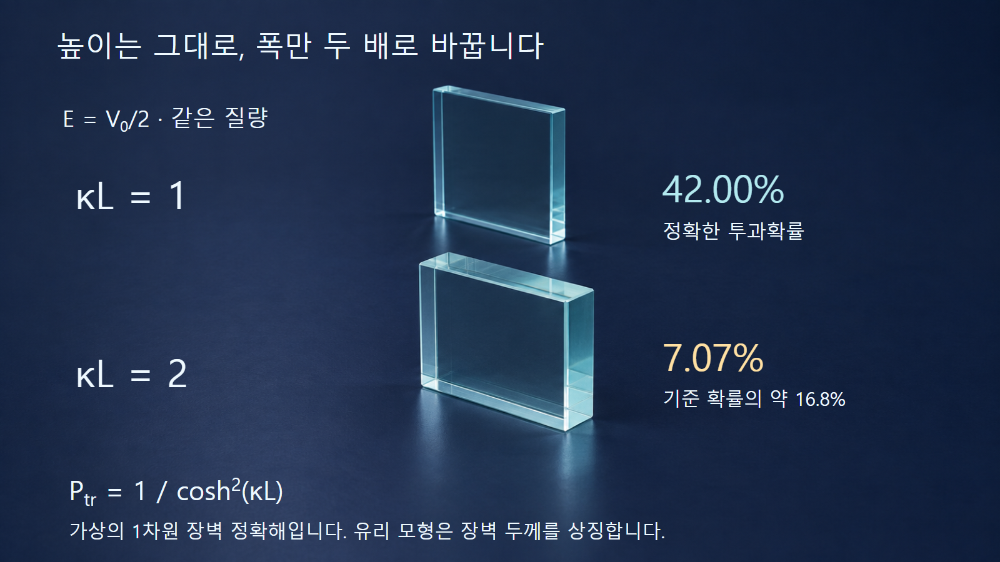
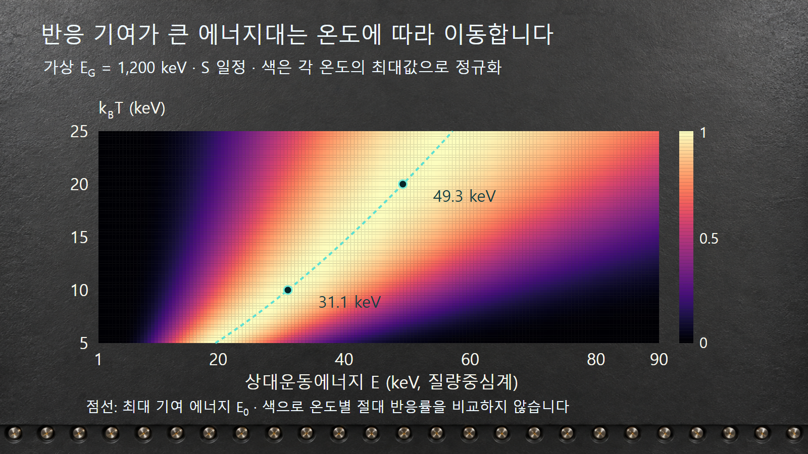

질량·에너지와 핵반응 · 039
쿨롱장벽과 터널링
장벽의 높이·폭과 열분포가 만드는 반응의 가능성을 구별합니다
쿨롱장벽은 양전하 원자핵들이 가까워질 때 커지는 위치에너지입니다. 입자의 에너지가 장벽보다 낮으면 고전적으로는 접근할 수 없지만, 양자역학에서는 유한한 장벽 너머로 투과할 확률이 생길 수 있습니다. 이 현상은 에너지를 빌리는 일이 아니라 파동함수와 경계조건이 만드는 결과입니다.
1. 장벽은 입자의 크기만으로 정해지지 않습니다
전하수가 Z1, Z2인 두 핵의 중심 사이 거리를 r로 두면, 핵력이 중요한 매우 짧은 거리 밖에서 쿨롱 위치에너지는 VC(r) = Z1Z2e²/(4πε0r)입니다. 전하수가 클수록, 거리가 작을수록 반발에 의한 위치에너지가 커집니다. 핵 가까이에서는 핵력과 핵의 유한한 크기까지 포함한 전체 퍼텐셜을 보아야 합니다.
반응 Q값이 음수일 때의 운동학적 문턱과 쿨롱장벽은 다릅니다. 전자는 반응 전후 에너지·운동량 보존으로 정해지는 최소 입사에너지이고, 후자는 핵들이 가까이 접근할 가능성을 억제하는 원인입니다. 터널링은 쿨롱장벽 아래의 접근을 가능하게 하지만, 최종상태를 만드는 데 필요한 에너지가 부족한 반응까지 허용하지는 않습니다.
2. 장벽 안의 파동함수가 곧 투과확률은 아닙니다
정지한 1차원 퍼텐셜에서 에너지가 일정한 입자를 생각합니다. 고전적으로 E < V인 영역에서는 운동에너지 E − V가 음수가 되어 입자의 고전 궤적을 이어갈 수 없습니다. 양자역학에서는 슈뢰딩거 방정식의 해가 그 영역에서도 존재하며, 상수 장벽 안의 공간 의존성은 증가·감소 지수함수의 조합으로 표현됩니다. 계수는 장벽 양쪽에서 파동함수와 도함수를 연속으로 맞춰 정합니다.
확률밀도는 |ψ|²이고, 투과확률 Ptr은 투과된 확률흐름을 입사 확률흐름으로 나눈 값입니다. 진폭 자체와 확률을 혼동하지 않습니다. 양쪽 퍼텐셜과 질량이 같으면 투과·입사 진폭비의 절댓값 제곱으로 구할 수 있지만, 양쪽 속도가 다르면 그 비도 반영해야 합니다. 장벽 안에 파동함수가 조금 존재한다는 사실만으로 모든 입자가 결국 통과한다고 말할 수는 없습니다.
정적인 장벽에서 탄성적으로 투과하는 동안 총에너지는 보존됩니다. 유한한 장벽 앞뒤의 퍼텐셜이 같다면 투과 후 운동에너지도 입사 때와 같습니다. 에너지–시간 불확정성 때문에 부족한 에너지를 잠시 빌렸다가 갚는다는 설명은 이 문제의 해법이 아닙니다.
3. 예시 1 — 같은 높이에서도 폭이 달라지면 결과가 바뀝니다
장벽 밖의 퍼텐셜은 0, 안에서는 V0이며 폭은 L인 직사각형 장벽을 사용합니다. 입자 질량은 모든 구간에서 같고, 0 < E < V0이며 흡수·비탄성 과정은 없다고 정합니다. κ = √[2m(V0 − E)]/ℏ는 역길이 단위입니다. 이 모형의 정확한 투과확률은 Ptr = {1 + [V0²/(4E(V0 − E))]sinh²(κL)}−1입니다. L은 장벽 전체 폭입니다.
E = V0/2로 놓으면 계수가 1이 되어 Ptr = 1/cosh²(κL)로 간단해집니다. cosh u = (eu + e−u)/2로 직접 계산할 수 있습니다. κL = 1에서는 약 0.41997, κL = 2에서는 약 0.07065입니다. 질량·높이·입사에너지를 그대로 두고 폭만 두 배로 만든 두 번째 경우의 확률은 첫 번째의 약 16.8%가 됩니다. 절반으로만 줄어드는 변화가 아닙니다.
| 무차원 폭 κL | 정확한 투과확률 | 해석 |
|---|---|---|
| 0.5 | 78.64% | 장벽 높이보다 낮아도 유한하게 투과합니다 |
| 1 | 42.00% | 기준 폭의 계산입니다 |
| 2 | 7.07% | 기준 폭의 두 배입니다 |
| 3 | 0.987% | 두꺼운 장벽에서 투과가 크게 억제됩니다 |
수치는 가상의 1차원 장벽 계산이며 핵융합 확률이나 실제 재료의 투과율 자료가 아닙니다. 입사 10,000회라는 동일한 시행을 많이 반복한다면 κL = 1에서 투과 기대수는 약 4,200회입니다. 한 번의 입자가 42%만 잘려서 통과한다는 뜻은 아닙니다.

4. 실제 쿨롱장벽은 직사각형이 아닙니다
천천히 변하는 장벽에서 투과가 작은 경우에는 WKB 근사로 에너지 의존성을 이해할 수 있습니다. 고전적으로 금지된 구간 x1부터 x2까지 √[2m(V(x) − E)]를 적분하고, 이를 −2/ℏ와 곱한 값을 지수에 넣습니다. 장벽 높이뿐 아니라 금지된 구간의 폭과 모양이 함께 작용합니다. 전환점 V = E 부근의 연결과 앞에 곱해지는 계수는 별도로 다루므로 이 지수형만을 항상 정확한 확률로 쓰지 않습니다.
핵 두 개의 상대운동에는 한 입자 질량 대신 환산질량 μ = m1m2/(m1 + m2)를 사용합니다. 에너지 E도 질량중심계의 상대운동에너지입니다. 쿨롱장벽의 주요 억제는 Gamow 인자 exp[−√(EG/E)]로 나타낼 수 있으며, EG는 전하수와 환산질량으로 정해지는 에너지 척도입니다. 실험실 입사에너지를 질량중심 에너지로 변환하지 않고 대입하면 다른 결과가 됩니다.
낮은 에너지 하전입자 반응에서는 σ(E) = [S(E)/E]exp[−√(EG/E)]로 단면적을 표현합니다. S(E)는 핵구조와 반응 경로의 나머지 영향을 담는 천체물리학적 S인자입니다. 공명 근처에서는 빠르게 변할 수 있습니다. 따라서 터널링 억제만 계산했다고 실제 융합 단면적까지 얻은 것은 아닙니다.
5. 예시 2 — 가장 많이 반응에 기여하는 에너지는 온도와 다릅니다
열평형 속도 분포에서는 에너지가 높은 입자 쌍일수록 드물지만 장벽 투과 억제는 작아집니다. S인자가 거의 일정하다고 가정하면 반응률 적분의 에너지별 기여는 F(E) ∝ exp[−E/(kBT) − √(EG/E)]로 정리됩니다. 이 식은 입자 수의 에너지 분포 자체가 아니라, 단면적과 상대속도까지 반영한 반응률 적분의 가중함수입니다.
실제 핵종 자료와 분리한 가상 모형으로 EG = 1,200 keV를 정합니다. kBT = 10 keV일 때 기여가 가장 큰 에너지는 E0 = [EG(kBT)²/4]1/3 = 약 31.1 keV입니다. 온도에 대응하는 에너지 10 keV와 다르며, 상대운동의 평균 에너지 3kBT/2 = 15 keV와도 다릅니다. 입자가 가장 많은 구간과 핵반응 기여가 가장 큰 구간을 구별해야 합니다.
같은 EG에서 kBT를 20 keV로 올린 계산의 봉우리는 약 49.3 keV로 이동합니다. E0가 T2/3에 비례하므로 온도 두 배에 대해 봉우리 에너지는 약 1.59배입니다. 각 온도에서 최대값을 1로 맞춘 색지도는 봉우리의 위치와 폭을 비교하는 그림이며, 서로 다른 온도의 절대 반응률 크기를 비교하는 자료는 아닙니다.

6. 터널링이 설명하는 것과 남겨 두는 것
양성자끼리 가까이 접근하는 것과 태양에서 중수소를 만드는 반응은 같은 단계가 아닙니다. 접근 이후 양성자 하나가 중성자로 바뀌는 약한 상호작용도 필요합니다. 태양의 수소 연소가 느린 이유를 쿨롱장벽 하나로만 설명하지 않습니다. 다른 핵종 조합도 핵구조·공명·선택규칙과 후속 반응에 따라 실제 수율이 달라집니다.
주사터널현미경은 핵반응이 아닌 전자의 터널링을 이용하는 예입니다. 탐침과 전도성 표면 사이의 간격을 매우 작게 하고 전압을 걸면 터널링 전류를 측정할 수 있습니다. 이 전류가 간격에 민감한 성질을 표면 관측에 활용합니다. 전자의 장벽과 원자핵 사이의 쿨롱장벽은 구체적인 질량·퍼텐셜·에너지 규모가 다르지만, 파동함수의 연결을 통해 유한한 투과가 생긴다는 원리는 공유합니다.
7. 숫자를 읽을 때 네 가지 경계를 지킵니다
첫째, 장벽 높이와 반응 에너지 문턱을 구별합니다. 둘째, 파동함수 진폭과 확률밀도·확률흐름을 구별합니다. 셋째, 특정 에너지의 단면적과 온도 분포를 평균한 반응률을 구별합니다. 넷째, 정확해와 지수 억제만 남긴 근사식을 구별합니다.
같은 지수함수 모양이라도 무엇을 확률로 정의했고 어떤 퍼텐셜을 사용했는지에 따라 숫자의 뜻이 달라집니다. 직사각형 장벽 예시는 폭의 민감도를, 가상 Gamow 색지도는 열분포와 투과 억제의 경쟁을 보여 줍니다. 이를 실제 핵반응 계산에 적용하려면 해당 반응의 검증된 단면적과 올바른 에너지·온도 정의가 추가로 필요합니다.